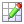
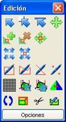

La mayoría de las herramientas de edición se encuentran en el panel del mismo nombre. Para acceder a este panel hay que pulsar en el icono  situado en la barra de herramientas. Una vez se haya pulsado este icono aparecerá el siguiente panel con las distintas herramientas de edición.

El resto de herramientas de edición se encuentran en la barra de herramientas del programa.